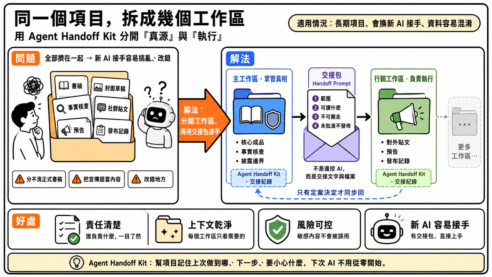

先講這篇用什麼當例子，你才知道關不關自己的事：你在寫一本書，還要一手包辦它的對外推廣——一邊顧書稿、封面、事實核查，一邊發 Facebook 貼文、預告、上架公告。目標很實在：把書做出來，也把它推出去。（不是寫書也沒關係——凡是同時要顧「核心成品」和「對外宣傳」、又得做上好幾天的項目，道理都一樣，把「書稿／行銷」換成你自己的情境即可。）
這種項目做著做著，就會撞上兩件事。第一，東西多、性質又不同——全堆在同一個資料夾，換個新 AI 對話接手，它分不清哪份是定稿、哪份只是行銷草稿，一改就改錯。第二，任務長——不是一兩次對話做得完的，你今天做一半，明天開個新對話接著做，AI 卻忘了昨天的脈絡。
單一個工作區、靠基本的開工收工，撐得住一條線的長任務；但當項目要同時推進好幾條線（一邊改書稿、一邊跑行銷），全擠在一起就會互相干擾。這篇要解決的，正是這種「複雜、多線、跨多次對話」的長任務該怎麼用 Agent Handoff Kit 來管。
你每次叫 AI 開工、收工，它就自動幫這個資料夾更新一份進度筆記——上次做到哪、下一步、要小心什麼。所以同一個資料夾的長任務，換多少次新對話都接得回。這篇要做的，是把這個能力從「一個資料夾」放大到「幾個資料夾分工」。
先釘一個說法：這篇講的「工作區」，就是你電腦上的一個資料夾，每個資料夾各自裝著 Agent Handoff Kit。一個項目用幾個資料夾，就是幾個工作區。
把核心那一塊——成品、事實核查、披露邊界——放主工作區，這裡是真源（唯一正確的正本，以它為準）。對外那一塊——貼文、預告、發布記錄——放一個行銷工作區去執行。兩個資料夾各自留各自的進度筆記，各做各的長任務，不會互相干擾。
例子裡是兩個，但數字不是上限。同一個項目，你大可以按任務再多開幾個（書稿一個、視覺一個、行銷一個、客服一個……），每多開一個，就多寫一份交接包交給它。主工作區始終守著真源，其他工作區各自執行，只有定了案的決定才回流到主工作區。
運用時會用到兩個相近、但不同的詞，先分清楚：
| 交接檔 | Agent Handoff Kit 自動幫每個資料夾維護的進度文件（dev/SESSION_HANDOFF.md）。撐的是同一個工作區、跨多次對話的長任務接力——你叫「收工」它就更新。 |
| 交接包 | 由你（或主工作區的 AI）親手寫的一段文字，撐的是跨工作區的交接——把一條任務線交給另一個工作區的 AI，講清楚範圍與邊界。它不是檔案。第 3 步給你範例。 |
起點假設你已經裝好 Agent Handoff Kit。下面每開一個新工作區，就在那個資料夾跑一次 npx --yes @adamchanadam/agent-handoff-kit@latest init 裝好它（安裝細節不在這篇）。重點在後面五步「怎麼用」。
init 裝好 Kit。責任清楚，誰掌真相、誰做執行一看就明；上下文乾淨（每個工作區的 AI 手上只有自己那條線的背景），草稿不會混進正式真源；風險可控，改錯、誤發的機會大減；長任務接得住，每條線換多少次對話都從交接檔接回。項目愈大、線愈多，這樣運用愈划算。
還沒上手 Agent Handoff Kit 的基本開工收工？先用 60 秒入門：
Agent Handoff Kit — 新手 60 秒入門想了解 Agent Handoff Kit 在本機 Agentic AI 工作系統中的位置，可再看方法論案例：
我的本機 Agentic AI 工作系統